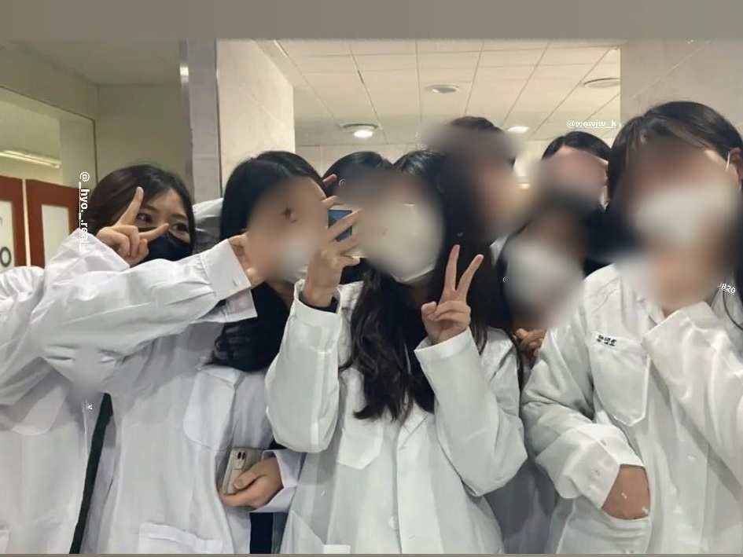

|  |
소속대학: 청운대학교
전공: 화학생명공학과 전공소개: 인간과 환경을 함께 생각하는 21세기의 첨단산업은 수학, 물리, 화학, 생물, 전산 등 과학과 공학의 전 분야를 복합화, 종합화 하기를 요구하고 있다. 화학생명공학과는 미래사회가 요구하는 융합 교육과정을 운영하여서 복합적 지식을 갖추고, 새로운 학문 분야에서 능동적으로 대처할 수 있는 21세기 종합인재형 엔지니어를 양성하고자 한다. 취업분야: 화학생명공학과는 종합학문을 교육하는 학과로써 정유 및 석유화학 산업체, 고분자 관련 산업체, 반도체, 디스플레이 등의 전자 분야 산업체, 에너지 관련 산업체, 바이오 및 생명 분야 산업체, 환경 관련 산업체, 제약, 화약, 섬유 등의 산업체, 연구소의 연구원 및 관련분야 공무원 등 다양한 분야로 진출이 가능한 학과이다. 나의 희망 진출분야: 환경 공학 |
|
|
2023년도 선배들의 추천으로 임원활동을 하였다. 임원활동을 하며 기획부 팀원을 맡았었고, 기획부에서는 예산 마련, 장소 섭외, 버스 등 예약, 사전 답사 등의 일을 진행하였다.
2023년도 1학기에는 신환회 및 OT, MT를 기획 및 진행하였다. 활동을 진행할 장소를 섭외하고, 장소까지 가는 거리, 비용 등을 계산하여 예산안을 마련하였다. 또한, 사전 답사를 통하여 해당 장소가 활동을 진행하기 적합한 장소인지, 적합하다면 몇명의 인원을 배치해야 안정적일지 등을 확인하고, 인원을 계산하여 음식이나 비품 등에 대한 구매 기획안을 작성하여 총무부에게 전달 및 검토를 받고, 행사 기획을 진행하였다. 2023년도 2학기에는 축제 부스를 기획하였다. 모든 임원들과 다같이 부스의 컨셉을 정하고, 컨셉에 맞게 음식 메뉴를 기획하였다. 부스 컨셉 및 메뉴를 정하고 나서는 사야할 재료 목록들과 얼마나 사야하는지 양과 금액을 계산하여 기획안을 총무부에게 금액을 검토받고, 적정하단 이야기를 들으면 기획안을 진행하였다. 또한, 부스의 컨셉에 맞게 포스터와 메뉴판을 제작하여 학교에 홍보를 하고, 학과 부스에 방문하는 학과 학우들의 명수를 조사하여, 학과 부스에 방문하는 학생들을 위한 음식도 준비하였다. 부스의 컨셉과 메뉴는 매우 성공적이였고, 4시간동안 50만원의 매출을 달성하였다. 많은 매출은 아니지만, 음식 마진을 비싸게 남길 수 없는 축제 특성상, 4시간 동안 50만원의 매출은 적지 않은 매출이라 생각한다. |
① 청학동 |
2023년도 1학기동안 학과에 선배들과 청학동을 진행하였다. 1학기 정해진 기간동안 같이 청학동을 하는 선배들과 모여서 정해진 시간동안 토익 공부를 하였다.
다같이 단어시험도 보고, 서로의 점수를 비교하며 문제도 풀었는데, 혼자 하는 것이 아닌 옆에 경쟁자가 있다 생각하니까 더 동기부여되어 잘되는 것 같은 느낌이였다. 과제를 하는 기간엔 수상결과가 나오지 않아 결과를 적을 수는 없지만, 토익점수가 많이 향상하여 뿌듯했다. |
② 비교과실험 |
2023년도 1학기동안 학과 동기들과 비교과 실험을 진행하였다. 식물 마를 1번 찌고 1번 말린 1증1포부터 5증5포, 9증9포를 폴리페놀 정량하여 어느 것이 더 폴리페놀 함량이 높은지 확인하는 실험을 진행하였다. 폴리페놀은 항산화 효과를 가졌기 때문에 폴라패놀의 함량이 높다는 것은 더 좋은 항상화 효과를 갖는다는 것을 의미한다. 매주 월요일 4시부터 오후 약 10시까지 실험을 진행하였다. 실험을 하는 과정에서 힘들기도 하였지만, 결과론적으로 화학생명공학과에서 꼭 필요한 실험 스킬을 많이 쌓았고, 전공 지식을 향상하는데 도움이 되었다. |
| 나는 학생시절부터 수많은 종류의 봉사를 해보았다. 과학관에서 어린이들의 실험을 보조하는 봉사부터, 소록도에서 한센병 환우분들을 돌보는 봉사, 중증 장애인 케어 도움 봉사, 장애인 음악회 보조 봉사, 아름다운가게 등 다양한 분야의 봉사를 해보았었다. 그 중 가장 기억에 남는 봉사를 간단히 소개해보고자한다. |
① 소록도 |
소록도 봉사는 소록도에 있는 교회를 통해 소록도에 계시는 한센병 환자분들을 돌보는 봉사이다. 약 5일 정도를 소록도에서 지내며 5일동안 소록도에서 봉사를 하는 것이다. 일과로는 새벽 3시에 기상하여 교회에서 환자분들과 같이 기도를 하고, 기도가 끝난 후에는 조깅을 하고 와서 밥을 먹고, 7시부터는 잡일이라던가 집안 청소, 어르신들 말동무 해드리기 등 환자분들을 돕는다. 시간이 조금 남으면 근처 소록도 박물관에 가서 한센병 환자분들이 소록도에서 어떤 삶을 사셨는지에 관하여 관람할 수 있다. 한센병 환자분들의 고통이 눈에 선하게 그려져 매우 고통스럽고, 이러한 역사를 늦게 본 내가 너무 무지했던 것 같다는 생각을 많이 하였다. 잠도 19:00-03:00에 취침하고 기상하고, 5일동안 섬에서 핸드폰 없이 지내야하며, 봉사가 고되다는 점에서 힘들긴 하였지만, 그만큼 뿌듯하고, 얻어갈 것이 더 많은 봉사였다. |
② 중증장애인센터 예원 |
예원은 중증장애인들이 지내는 법인 시설이다. 계양구에 위치해있는데, 예원 역시 조금 산속에 있어서 봉사하기 쉽지는 않았다. 센터를 청소하고, 놀이교구 등을 준비 및 정리하며, 같이 산책을 하며 바람 쐬는것도 좀 도와드리고 밥먹는 것도 보조하는 등 전반적인 케어에 대한 봉사를 하게 된다. 센터가 작지 않기 떄문에 청소가 많이 힘들고, 아무래도 중증 장애인이다보니 케어가 매우 힘든 것은 사실이다. 그러나, 봉사를 진행하며 사람을 다루는 법을 알게 되고, 타인을 배려하는 방법을 알게 되어서 매우 값진 경험이라 생각하였다. |
③ 아름다운가게 |
아름다운가게는 물건을 재순환시키는 가게이다. 평소 쓰지 않는 물품들을 기부받은 후, 기부받은 물건을 다른 사람들에게 팔아 나오는 수익으로 기부가 필요한 다양한 사람들에게 기부를 하는 선순환적 가게이다. 이곳은 전국에 매장이 많고, 가게에서 물건을 받고, 파는 등의 행위만 주로 하기에 그렇게까지 힘들지는 않았다. 다만, 손님의 수가 많고, 복잡하며 기계를 잘 다루어야한다. 이런 방식의 봉사는 처음이라 신선한 경험이였다. |